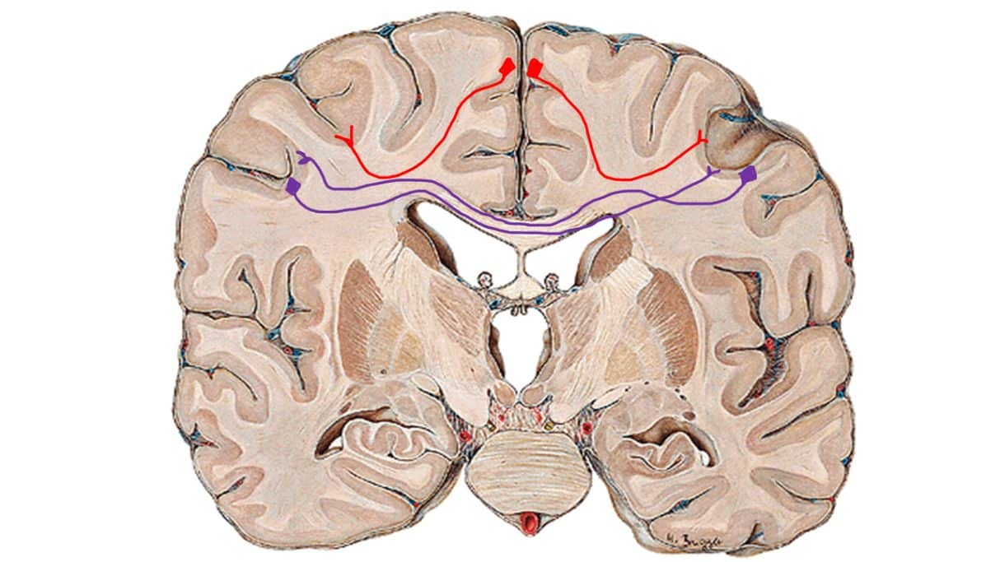
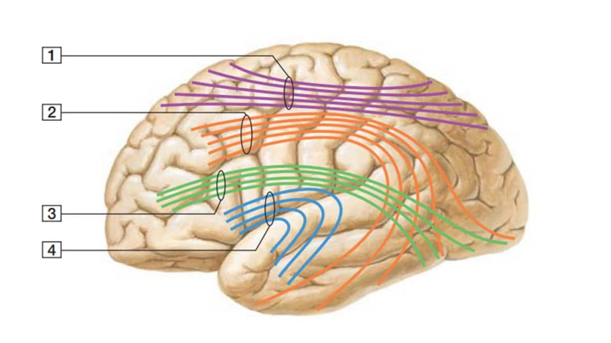
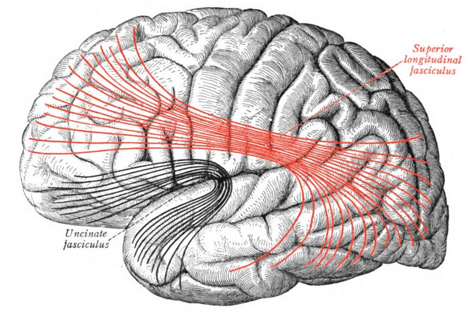
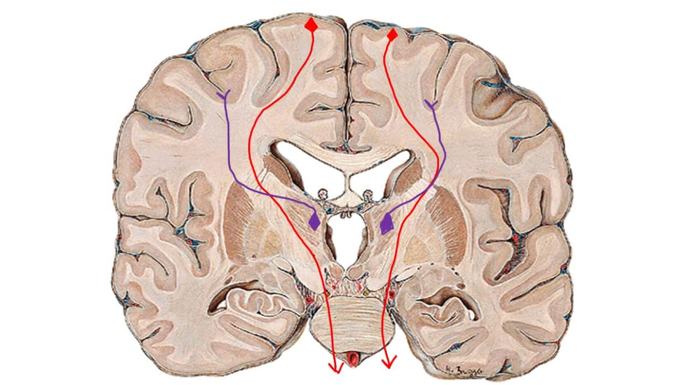
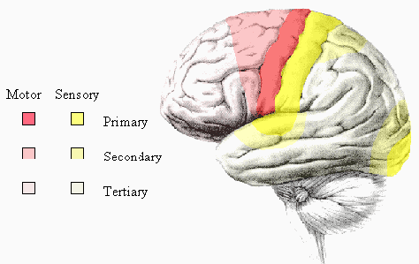

Antes da leitura do texto, lembre-se de que:
1) fibras = neurônios;
2) córtex cerebral é a substância cinzenta que está na periferia do cérebro… a “casca” do cérebro.
As fibras do córtex cerebral podem ser classificadas em:
Se conectam com outros neurônios que também estão no córtex cerebral.
Essas fibras podem ser inter-hemisféricas – quando conectam os diferentes hemisférios, ou intra-hemisféricas – quando conectam diferentes áreas de córtex cerebral do mesmo hemisfério.
Veja tudo isso na imagem abaixo:
Figura 1 – Fibras de associação.
Neurônios roxos: representam fibras de associação inter-hemisféricas.
Neurônios vermelhos: representam fibras de associação intra-hemisféricas.

São exemplos de fibras de associação inter-hemisféricas.
Elas cruzam o plano, de um hemisfério para o outro, formando um ângulo de 90 graus com a linha mediana (imagine uma linha que passa bem ao meio, e te divide em 2 metades iguais).
A maior comissura do telencéfalo é o corpo caloso.
Na figura 1, as fibras roxas estão compondo essa comissura.
Como exemplos de fibras de associação intra-hemisféricas, temos os fascículos.
Se são fibras de associação, elas conectam córtex com córtex.
E se são intra-hemisféricas, elas conectam córtex com córtex do mesmo hemisfério.
Figura 2 – Fascículos.
1: Fascículo occipitofrontal superior;
2: Fascículo longitudinal superior;
3: Fascículo longitudinal inferior;
4: Fascículo uncinado.

Aqui, vale à pena chamar a atenção para o Fascículo longitudinal superior (número 2 na figura) que contém o fascículo arqueado = um feixe de axônios.
Uma parte dele une as áreas de Broca (no giro frontal inferior) à área de Wernicke (entre lobo temporal e parietal).
Alterações nesse fascículo levam à afasia de condução (problema de linguagem, devido falha na comunicação entre essas duas importantes áreas).

são aquelas que conectam córtex com qualquer outra área fora do córtex!
Essa outra área pode estar no tálamo, núcleos da base, tronco encefálico, medula espinal…. observe que as fibras ligam anatomicamente o córtex às partes FORA dele.
Essas fibras podem ser tanto AFERENTES como EFERENTES! Ou seja:
Uma fibra que leva informação do córtex para a medula espinal é uma fibra de projeção eferente.
Uma fibra que leva informação do tálamo para o córtex é uma fibra de projeção aferente.
Não importa se a fibra está levando informação para o córtex, ou levando informação do córtex.
Se ela une córtex à qualquer outra área, é uma fibra de projeção.
Observe isso, na imagem abaixo:
Figura 3 – Fibras de projeção.
Neurônios roxos: representam fibras de projeção aferentes.
Neurônios vermelhos: representam fibras de projeção eferentes.

Sabemos que a informação sensitiva viaja da periferia para o córtex cerebral (ponto mais alto de processamento da informação).
Na imagem da figura 3, os neurônios roxos seriam de vias sensitivas, porque são aferências… estão levando informação para o córtex cerebral.
É o que está acontecendo com você, enquanto lê esse texto.
A informação sensorial está entrando (pelo sentido da visão), e indo para o córtex cerebral.
Já os neurônios vermelhos seriam motores, pois estão levando informação do córtex para a periferia (eferência).
É o que está acontecendo comigo, enquanto digito esse texto.
Informação está deixando meu córtex cerebral, e indo para neurônios motores dos músculos das mãos.
Um exemplo dessa via é o trato córtico-espinal.
Colocando de maneira bem simples, área primária é o primeiro lugar do córtex que uma informação aferente chega, ou o último lugar do córtex que uma informação eferente deixa, ou seja, são àquelas que conectam córtex cerebral com qualquer outra região além dele.
Assim, perceba que uma área primária possui exatamente as fibras de projeção, que fazem a conexão do córtex com outras partes.
Seja essa conexão AFERENTE (informação sensorial chegando no córtex), ou EFERENTE (informação motora deixando o córtex).
Área primária é isso: conecta o córtex cerebral com outras regiões subcorticais.
Essa conexão ocorre por FIBRAS DE PROJEÇÃO!
E para encerrar, vamos complementar o que está acontecendo agora mesmo, comigo e com você:
Enquanto você lê esse texto, a informação chega ao seu córtex pela primeira vez (área visual primária, que recebe fibras de projeção, trazendo a informação visual).
Depois que isso é enxergado de forma rudimentar na área visual primária (chamada de V1), a informação segue para área secundária.
As fibras que levam essa informação são de ASSOCIAÇÃO (percebe que elas conectam uma área de córtex, que é o V1, com outra área de córtex?).
Depois, a informação ainda segue para uma área terciária, onde vai ser conectada com conhecimentos prévios… conectada com memórias sobre o assunto…
Todas essas conexões estão acontecendo por meio de fibras de associação, porque nenhuma projeta, ou seja, nenhuma está ligando o córtex à áreas subcorticais.

Vamos agora para os eventos no meu córtex cerebral: enquanto formulo o texto, áreas terciárias estão trabalhando… pois preciso buscar essas informações de regiões que armazenam minha memória no conhecimento de neurologia… de língua portuguesa… etc.
Quando as áreas terciárias decidem o que elas querem dizer, a informação passa para áreas motoras secundárias (veja que a informação chegou na secundária por meio de fibras de associação).
Na área motora secundária, a programação de como meus dedos vão se mover é feita.
Eu já possuo programas de como mover os dedos, para alcançar determinadas teclas (isso devido aprendizagem motora, adquirida por muitos anos digitando… como você vai aprender que acontece em qualquer aprendizado motor).
Agora com o movimento programado, fibras de associação partem da área motora secundária para a área motora primária (M1).
A M1 sim, conecta o córtex com estruturas subcorticais, ou seja, daí partirão fibras de PROJEÇÃO, para levar a ordem do movimento aos neurônios motores da medula espinal.
Essas fibras formam os tratos córtico-espinais, e vão fazer sinapse com os motoneurônios que inervam os músculos necessários para que eu digite.